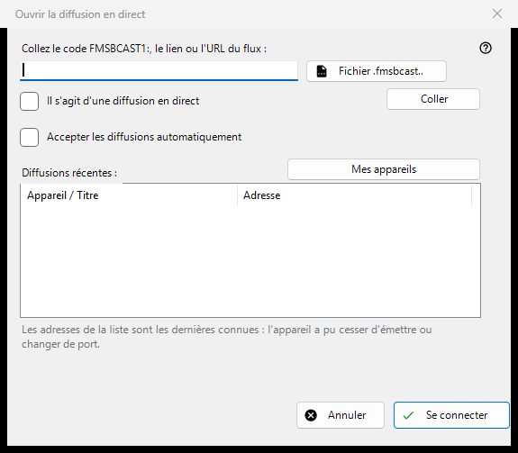

Diffusion en direct
Objectif
Collez un code FMSBCAST1:, un lien ou une URL de flux, ou choisissez un fichier .fmsbcast. Marquez une URL ordinaire comme directe uniquement pour une source en direct ; sinon elle s'ouvre à la demande. Cliquez sur Connecter et saisissez le mot de passe du spectateur si demandé. Une adresse récente peut devenir invalide après arrêt ou changement de port. L'acceptation automatique de Cast est un choix explicite distinct.


Dans cet ordre
Collez un code FMSBCAST1:, un lien ou une URL de flux, ou choisissez un fichier .fmsbcast. Marquez une URL ordinaire comme directe uniquement pour une source en direct ; sinon elle s'ouvre à la demande. Cliquez sur Connecter et saisissez le mot de passe du spectateur si demandé. Une adresse récente peut devenir invalide après arrêt ou changement de port. L'acceptation automatique de Cast est un choix explicite distinct.
Les éléments
FMSBCAST1: / .fmsbcast
Collez un code FMSBCAST1:, un lien ou une URL de flux, ou choisissez un fichier .fmsbcast. Marquez une URL ordinaire comme directe uniquement pour une source en direct ; sinon elle s'ouvre à la demande. Cliquez sur Connecter et saisissez le mot de passe du spectateur si demandé. Une adresse récente peut devenir invalide après arrêt ou changement de port. L'acceptation automatique de Cast est un choix explicite distinct.
Paramètres du gestionnaire · Paramètres de partage SFTP · Paramètres du serveur d’échange